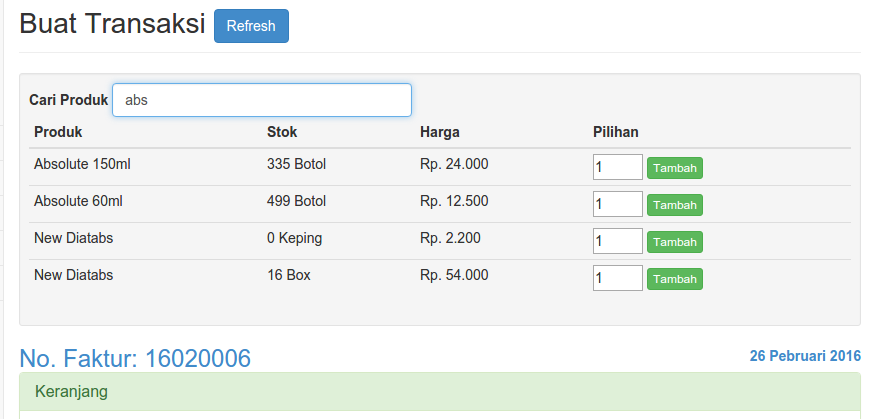
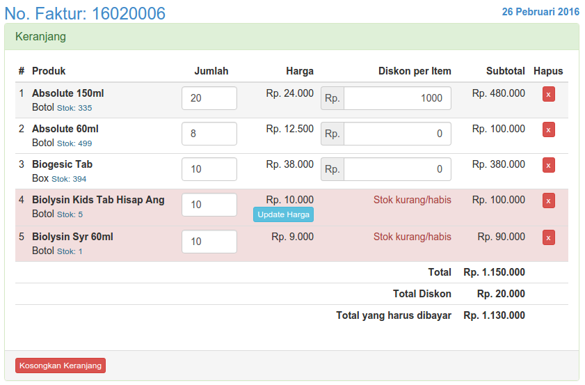
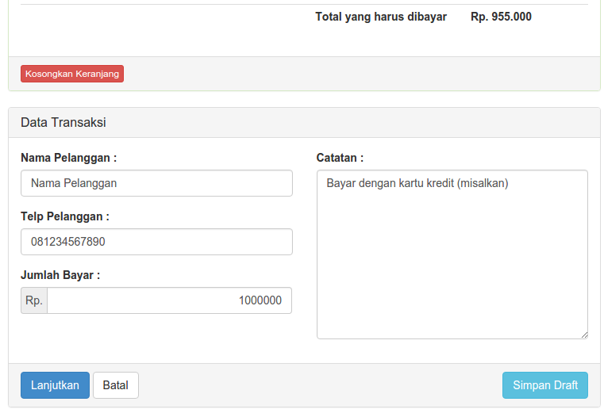
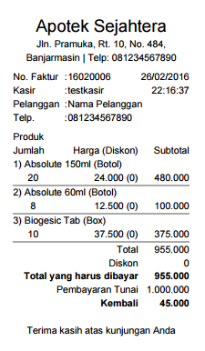
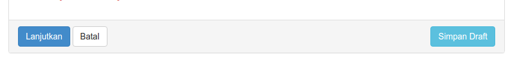
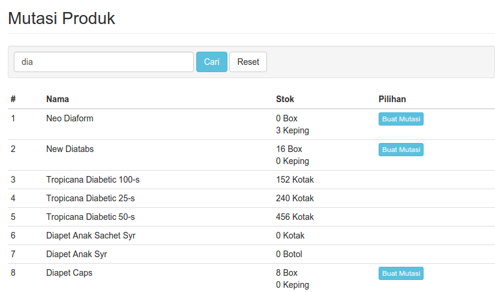
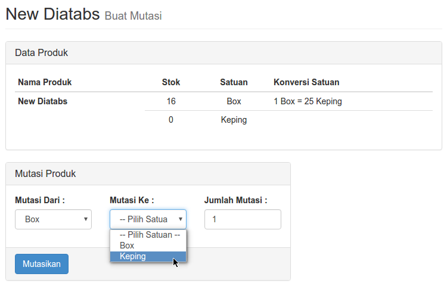

Panduan Kasir
Kasir adalah tipe pengguna/user yang dapat melakukan aktifitas berikut:
- Membuat/Input Transaksi
- Keranjang
- Melihat Detail Transaksi
- Mencetak Nota/Faktur
- Melihat Daftar Transaksi Hari ini
- Mencari Nota/Faktur
- Mutasi Stok
Membuat/Input Transaksi
Yaitu melakukan input transaksi penjualan produk kepada customer dan menyimpan transaksi sebagai draft (simpan sementara).

Mencari dan Input Produk ke Keranjang

- Klik pada menu Input Transaksi
- Pada Kolom Cari Produk, Ketik nama Produk minimal 3 huruf, muncul daftar produk
- Pilih produk sesuai satuannya, isikan Jumlah yang akan dimasukkan ke Keranjang (Catatan: Perhatikan Stok Produk yang bersangkutan)
- Klik tombol Tambah
- Produk tersebut akan masuk ke Keranjang
- Ulangi langkah ke 2 s/d ke 4 untuk menambahkan produk lainnya
- Klik tombol Refresh untuk menghilangkan hasil pencarian
Keranjang
Keranjang adalah daftar produk yang akan dibeli oleh pelanggan. Pada keranjang, kasir dapat menambahkan item (produk), menghapus produk, menambahkan/mengurangi jumlah, dan memberikan diskon per item.

Menggunakan keranjang
- No. Faktur adalah Nomor Transaksi yang akan dibuat, dengan format tahun-bulan-no.urut (yymmxxxx)
- Tanggal adalah tanggal hari ini yang merupakan tanggal transaksi diinput
- Ubah kolom Jumlah pada kolom yang diinginkan, lalu tekan Enter, Subtotal item otomatis akan berubah (Harga Satuan x Jumlah)
- Isikan Diskon per Item (jika ada), lalu tekan Enter, diskon akan terakumulasi secara otomatis pada kolom Total Diskon (diskon per item x jumlah)
- Kolom Hapus untuk menghapus item yang batal/tidak jadi. Klik tanda silang (x) pada kolom Hapus -> OK, maka item akan terhapus dari keranjang.
- Tombol Update Harga digunakan untuk mengupdate harga yang ada pada keranjang (jika admin telah mengubah harga produk tersebut)
- Total ada adalah jumlah total belanja pelanggan sebelum dipotong Diskon
- Total yang harus dibayar adalah jumlah total belanja pelanggan setelah dipotong diskon
Catatan
- Baris item pada keranjang akan berwarna merah jika ada masalah Stok produk
- Jika masih ada baris item yang berwarna merah, transaksi tidak dapat dilanjutkan/disimpan
Melanjutkan Proses Transaksi
Jika sudah selesai mengisi keranjang sesuai pesanan Pelanggan

- Isikan Nama Pelanggan, No. Telp, dan Jumlah Bayar
- Jumlah Bayar diisi :
- Minimal sejumlah Total yang harus dibayar
- Maksimal sejumlah Total yang harus dibayar + 100.000
- Isikan Catatan transaksi jika diperlukan
- Klik Lanjutkan
- Pada halaman Konfirmasi Transaksi, periksa kembali daftar produk, satuan, harga, jumlah item, nama/telp Pelanggan
- Klik tombol Kembali jika ingin ada perbaikan pada Keranjang atau Data Transaksi
- Klik tombol OK, Simpan Transaksi untuk menyimpan transaksi

Detail Transaksi
Halaman informasi detail sebuah transaksi pembelian Pelanggan

Keterangan Gambar:
- Data Transaksi
- Daftar Belanja
- Tombol Cetak Nota untuk mencetak nota atau faktur belanja Pelanggan

Draft Transaksi
Adalah transaksi yang disimpan untuk sementara

Menyimpan Transaksi ke Dalam Draft
- Input transaksi baru
- Isi keranjang
- Klik tombol Simpan Draft
- Transaksi akan masuk ke dalam daftar Draft Transaksi

Edit Draft Transaksi
- Diakses melalui Transaksi > Draft Transaksi
- Muncul daftar transaksi yang telah disimpan sebagai draft
- Klik tombol Edit untuk melanjutkan transaksi yang tersimpan
- Tombol Edit akan muncul sesuai dengan pemilik transaksi (User yang membuatnya)
- Lakukan pencarian Produk, pengisian Keranjang, Nama Pelanggan, Telp, dan Jumlah Bayar
- Tekan tombol Update Draft untuk menyimpan (masih sebagai draft)
- Tekan tombol Lanjutkan jika ingin melanjutkan dan menyelesaikan transaksi
- Tekan tombol Hapus Draft untuk membatalkan draft transaksi

Daftar Transaksi Hari Ini
Adalah menu/halaman untuk melihat daftar transaksi/nota yang dibuat pada hari ini.

Mencari Daftar Transaksi Hari Ini
- Klik menu Transaksi > Transaksi Hari Ini
- Ketik bagian dari Nomor Nota/Faktur atau bagian dari Nama Pelanggan, tekan Enter
- Klik Detail pada transaksi yang diinginkan, maka akan terlihat detail/rincian transaksinya
- Cetak Nota apabila ingin mencetak nota
Mencari Nota/Faktur
Mencari nota sesuai nomor faktur yang telah dibuat untuk melihat detail transaksi dan mencetak ulang nota.
- Klik menu Cari Nota
- Isi nomor faktur atau nama pelanggan untuk mencari nota, klik Cari
- Klik Detail untuk melihat rincian/detail nota
- Klik Cetak Nota untuk mencetak nota

Mutasi Stok
Yaitu untuk melakukan pemindahan stok dari satuan besar ke satuan kecil.
Misalnya:
- Produk memiliki satuan Dus dan Botol
- Satu Dus = 10 Botol
- Di dalam stok ada 7 Dus dan 1 Botol
- Kemudian 1 Dus akan dibuka menjadi 10 Botol
- Stok berubah menjadi: 6 Dus dan 11 Botol
Cara Memutasi Stok

- Buka Menu Mutasi Stok
- Ketik nama produk yang ingin dimutasi, klik Cari
- Pada kolom Stok akan terlihat jumlah Stok setiap Satuan
- Klik tombol Buat Mutasi pada produk yang akan dimutasikan
 - Isi kolom Mutasi Produk beserta jumlah mutasinya
- Klik Mutasikan dan jumlah Stok Satuan akan berubah setelah dimutasi